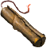
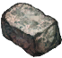

Динамит Халагара
Предметы / Ресурсы
Открыть в интерактивной вики →
| Вес | 10 |
|---|
Описание
Взрывчатка, ее мощность рассчитана на добычу  Халагар в Беирне.
Халагар в Беирне.
Где использовать:

Блок гранита из пещер гигантов на Склоне Дмортер. ПродаетХалагар в Беирне. Где использовать:
Рецепт
Покупка: 100k